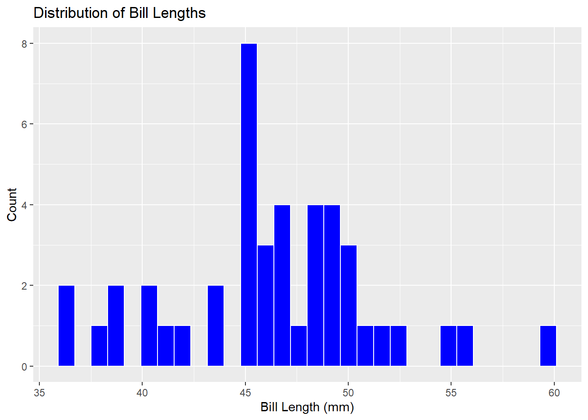

penguins %>%
count(island)# A tibble: 3 × 2
island n
<fct> <int>
1 Biscoe 168
2 Dream 124
3 Torgersen 52This activity serves as an introduction to using R to interact with data. The purpose of this activity is to simply gain familiarity with using R to interact with data. After completing this activity, you’ll have done the following:
%>%) to chain commands together.count() function to create a frequency table for categorical variables.summarise().filter() and select() functions.group_by() and compute summary statistics on groups.ggplot() to display data graphically.When we open R/RStudio, we have access to basic R functionality. Often, we’ll want to extend that functionality to perform specialized tasks. Developers in the R community write and publish packages which can be installed and used by R-users. We install packages with install.packages("package_name") and load packages into our current R session with library(package_name). While packages only need to be installed once, they must be loaded in each R Session you intend to use them in (note: an R Session begins when R/RStudio are opened and ends when they are closed or terminated). For example, you’ve already run install.packages("palmerpenguins") and library(palmerpenguins) to install and load the palmerpenguins package in your PalmerPenguins_Initial Quarto notebook. You won’t need to run install.packages("palmerpenguins:) again, but you will need to re-load the library when we open our notebook again.
File -> Recent Projects and select the PalmerPenguinsAnalysis project from the list to open it.PalmerPenguins_Initial notebook.ctrl+Enter, cmd+Return, or by hitting the green play button in the top-right corner of the code chunk.Including a narrative alongside any analysis is extremely important. It is difficult for someone to simply read your code and immediately know what you are doing. Walking a reader through your thought process is helpful. As a reminder, Quarto notebooks allow you to mix R-code and text – in general, code chunks appear with a grey background while text appears over a white background.
head() of the penguins data frame, create a bulleted list of questions you are interested in answering in your analysis (you can use forward slash to format a list, too!).There are some basic functions in R that are useful throughout any analysis. You’ll be exposed to those here.
Summarizing Data: In the penguins data frame, we’ll find recorded values of some numerical variables (variables for which a measure like the average is meaningful) and other variables which are categorical (grouping variables). We typically summarize categorical variables by counting the number of observations in each category – often called a frequency table. We can build frequency tables in R with the count() function. For numerical variables, we have more options – the mean() and median() are both measures of average, while we can use sd(), IQR(), and quantile() to measure spread.
Counts for Categorical Data:
island variable with the chain below. Create a new code cell in your Quarto notebook (remember, you can do this by typing a forward slash and choosing R Code Chunk from the list of options), and type/run the code to produce the frequency table.penguins %>%
count(island)# A tibble: 3 × 2
island n
<fct> <int>
1 Biscoe 168
2 Dream 124
3 Torgersen 52species variable. Interpret the output here as well.penguins %>% count(island, species)? Run it in a new code cell and interpret the output.penguins %>%
count(island, species) %>%
pivot_wider(names_from = species, values_from = n, values_fill = 0)# A tibble: 3 × 4
island Adelie Gentoo Chinstrap
<fct> <int> <int> <int>
1 Biscoe 44 124 0
2 Dream 56 0 68
3 Torgersen 52 0 0kableExtra package though – try it!penguins %>%
count(island, species) %>%
pivot_wider(names_from = species, values_from = n, values_fill = 0) %>%
kable() %>%
kable_styling(bootstrap_options = c("hover", "striped"))| island | Adelie | Gentoo | Chinstrap |
|---|---|---|---|
| Biscoe | 44 | 124 | 0 |
| Dream | 56 | 0 | 68 |
| Torgersen | 52 | 0 | 0 |
Summaries for Numerical Data: As mentioned earlier, summaries for numerical data can include measures of center, spread, and other metric – even those of our own invention!
penguins %>%
summarize(mean_bill_length_mm = mean(bill_length_mm))# A tibble: 1 × 1
mean_bill_length_mm
<dbl>
1 NAOops – there were missing values in there! This is a good opportunity to explain that missing data is contagious – that means that if we try to compute a quantity, and some of the values are missing (NA), then the result will be NA. Let’s try this again, but explicitly tell R that we want to ignore the NA values.
penguins %>%
summarize(mean_bill_length_mm = mean(bill_length_mm, na.rm = TRUE))# A tibble: 1 × 1
mean_bill_length_mm
<dbl>
1 43.9That’s better! Perhaps the mean alone, is not sufficient. Let’s include the median, standard deviation, minimum, 25th percentile, 75th percentile, and maximum bill lengths as well.
penguins %>%
summarize(
min_bill_length = min(bill_length_mm, na.rm = TRUE),
first_quartile_bill_length = quantile(bill_length_mm, 0.25, na.rm = TRUE),
median_bill_length = median(bill_length_mm, na.rm = TRUE),
mean_bill_length_mm = mean(bill_length_mm, na.rm = TRUE),
third_quartile_bill_length = quantile(bill_length_mm, 0.75, na.rm = TRUE),
standard_deviation_bill_length = sd(bill_length_mm, na.rm = TRUE)
) %>%
pivot_longer(cols = everything())# A tibble: 6 × 2
name value
<chr> <dbl>
1 min_bill_length 32.1
2 first_quartile_bill_length 39.2
3 median_bill_length 44.4
4 mean_bill_length_mm 43.9
5 third_quartile_bill_length 48.5
6 standard_deviation_bill_length 5.46The last line, pivot_longer(cols = everything()) converts the table from being very wide to a more manageable long table. To see the benefit of doing this, remove the last line and the pipe (%>%) at the end of the previous line, then re-run the code chunk.
If you want a nicely formatted table, pipe the result into kable() as we did earlier. Just copy/paste what we did!
We don’t have to work with the entire dataset. We can select specific columns (using the select() function) or rows satisfying certain conditions (using the filter() function).
species, island, sex, and year columns.penguins %>%
select(species, island, sex, year)# A tibble: 344 × 4
species island sex year
<fct> <fct> <fct> <int>
1 Adelie Torgersen male 2007
2 Adelie Torgersen female 2007
3 Adelie Torgersen female 2007
4 Adelie Torgersen <NA> 2007
5 Adelie Torgersen female 2007
6 Adelie Torgersen male 2007
7 Adelie Torgersen female 2007
8 Adelie Torgersen male 2007
9 Adelie Torgersen <NA> 2007
10 Adelie Torgersen <NA> 2007
# … with 334 more rowsfilter() the dataset to include only Chinstrap penguins.penguins %>%
select(species, island, sex, year) %>%
filter(species == "Chinstrap")# A tibble: 68 × 4
species island sex year
<fct> <fct> <fct> <int>
1 Chinstrap Dream female 2007
2 Chinstrap Dream male 2007
3 Chinstrap Dream male 2007
4 Chinstrap Dream female 2007
5 Chinstrap Dream male 2007
6 Chinstrap Dream female 2007
7 Chinstrap Dream female 2007
8 Chinstrap Dream male 2007
9 Chinstrap Dream female 2007
10 Chinstrap Dream male 2007
# … with 58 more rowsSince we know that these are all Chinstrap penguins, perhaps we no longer need the species column. We can de-select it using the select() function and a minus (-) sign in front of the column name. We can also store this smaller data frame into a new object called chinstraps by using the arror (<-) operator.
chinstraps <- penguins %>%
select(species, island, sex, year) %>%
filter(species == "Chinstrap") %>%
select(-species)
chinstraps %>%
head()# A tibble: 6 × 3
island sex year
<fct> <fct> <int>
1 Dream female 2007
2 Dream male 2007
3 Dream male 2007
4 Dream female 2007
5 Dream male 2007
6 Dream female 2007We can use group_by() and summarize() to quickly compare summary statistics across groups. Let’s compare the average and standard deviation in bill_depth_mm across the species groups.
penguins %>%
group_by(species) %>%
summarise(
mean_bill_depth_mm = mean(bill_depth_mm, na.rm = TRUE),
sd_bill_depth_mm = sd(bill_depth_mm, na.rm = TRUE)
)# A tibble: 3 × 3
species mean_bill_depth_mm sd_bill_depth_mm
<fct> <dbl> <dbl>
1 Adelie 18.3 1.22
2 Chinstrap 18.4 1.14
3 Gentoo 15.0 0.981What do you notice? Add this code to your notebook, run it, and include an interpretation of the results.
ggplot()There are entire courses on data visualization. We’ll give you just a taste of it here.
One Categorical Variable: We can visualize a categorical variable with a barplot.
penguins %>%
ggplot() +
geom_bar(mapping = aes(x = species)) +
labs(title ="Counts of Penguin Species",
x = "Species", y = "Count")
ggplot() includes + signs. Speculate on how and why these are used within the ggplot() function.One Numerical Variable: We can visualize a single numerical variable with a histogram (geom_histogram()), density (geom_density()), or boxplot (geom_boxplot()).
penguins %>%
ggplot() +
geom_histogram(mapping = aes(x = bill_length_mm),
color = "white",
fill = "blue") +
labs(title ="Distribution of Bill Lengths",
x = "Bill Length (mm)", y = "Count")`stat_bin()` using `bins = 30`. Pick better value with `binwidth`.Warning: Removed 2 rows containing non-finite values (stat_bin).
Two Numerical Variables: We can explore a potential relationship between two numerical variables with a scatterplot.
penguins %>%
ggplot() +
geom_point(mapping = aes(x = bill_depth_mm, y = bill_length_mm)) +
labs(title = "Bill Depth and Length",
x = "Bill Depth (mm)",
y = "Bill Length (mm)")Warning: Removed 2 rows containing missing values (geom_point).
Two Categorical Variables: We can explore potential associations between pairs of categorical variables using barplots and fill.
penguins %>%
ggplot() +
geom_bar(mapping = aes(x = island, fill = species)) +
labs(title = "Species by Island",
x = "Island",
y = "Species")
One Numerical and One Categorical Variable: Effective visualizations to compare a numerical variable and a categorical variable include side-by-side boxplots, or faceted plots.
penguins %>%
ggplot() +
geom_boxplot(mapping = aes(x = bill_depth_mm, y = species)) +
labs(title = "Bill Depth by Species",
x = "Bill Depth (mm)",
y = "")
penguins %>%
ggplot() +
geom_histogram(mapping = aes(x = bill_depth_mm)) +
facet_wrap(~species, ncol = 1) +
labs(title = "Bill Depth by Species",
x = "Bill Depth (mm)",
y = "")
Once you get comfortable with basic ggplot() syntax, it is quite easy to build more complex plots. For example, see the plot below.
penguins %>%
filter(!is.na(sex)) %>%
ggplot() +
geom_point(mapping = aes(x = bill_length_mm,
y = flipper_length_mm,
color = species,
shape = sex)) +
geom_smooth(mapping = aes(x = bill_length_mm,
y = flipper_length_mm,
color = species)) +
facet_grid(rows = vars(island), cols = vars(sex), scales = "free") +
labs(title = "Flipper and Bill Lengths by Species and Sex",
x = "Bill Length (mm)",
y = "Flipper Length(mm)") +
theme_light()`geom_smooth()` using method = 'loess' and formula 'y ~ x'
Throughout this activity, you had your first exposure to using R to interact with data. You learned how to manipulate data in a tabular format using selector functions like select() and filter(). You learned how to compute summary statistics for both categorical and numerical data. Finally, you learned how to display data visually with ggplot().
Git tab in the top-right pane of RStudio.